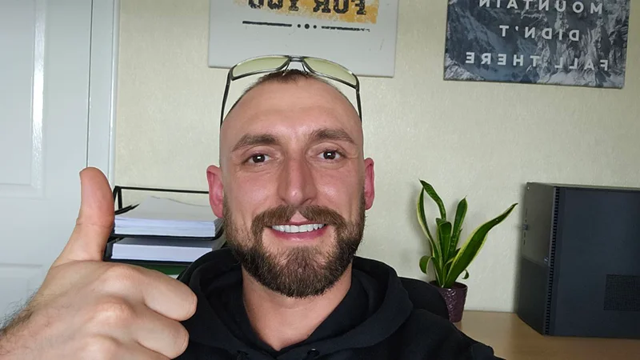

My Journey
Over the years I spent the majority of my life in warehouse jobs, until I became a painter and decorator. However, after returning to warehouse work for the last 15 years, at the age of 33, I decided to change my life and return to education.
I am a classic example of someone who chose to transform their life at a later stage. After years without clear goals or direction, I began teaching myself new skills, including a foreign language, where I placed in the top 1% globally on Duolingo.
Since then, I have completed my computing college certification three months early, strengthened my mathematics to enter higher education, and completed a Fastrack route which allowed me to join University for the first time.

I have spent the last three years completing a BSc (Hons) in Web Design, Development and Analytics at Edge Hill University, Ormskirk, finishing my first year with the highest overall grade in the Accessible Web Design and Development module, and I am currently on track for a solid 2.1 overall grade.